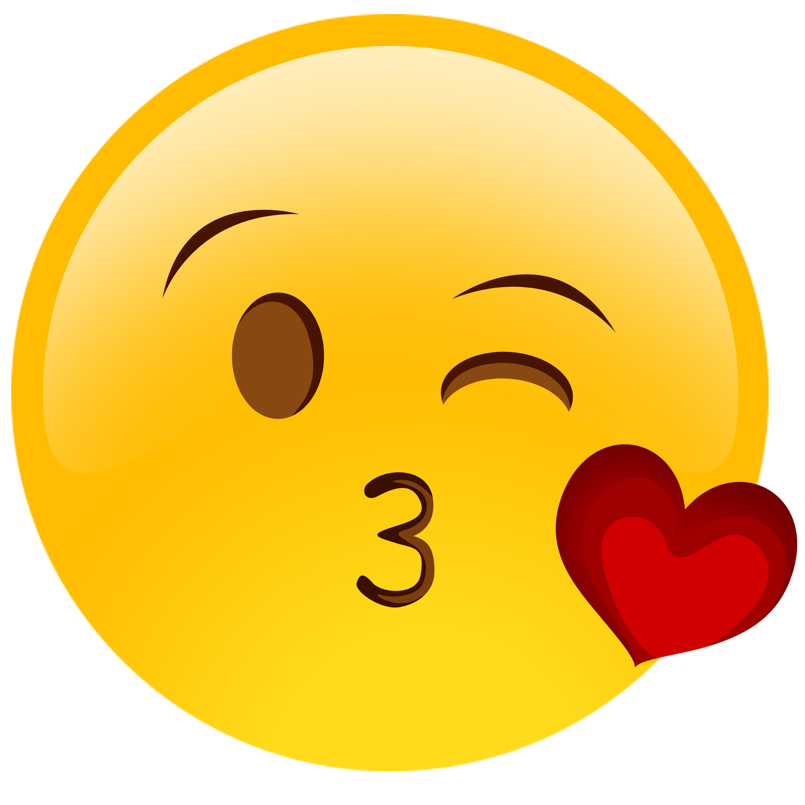
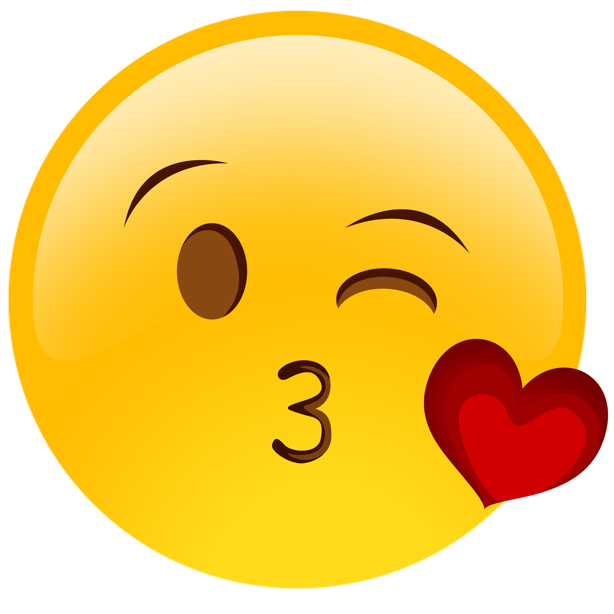

The world will soon have its first emoji-only social network: Emoj.li. This news, announced in late June, was met with a combination of scorn and amusement from the tech press. It was seen as another entry in the gimmick-social-network category, to be filed alongside Yo.
Emoji are the social lubricant smoothing the rough edges of our digital lives: They underscore tone, introduce humor, and give us a quick way to bring personality into otherwise monochrome spaces. All this computerized work is, according to Michael Hardt, one face of what he terms immaterial labor, or “labor that produces an immaterial good, such as a service, knowledge, or communication.” “We increasingly think like computers,” he writes, but “the other face of immaterial labor is the affective labor of human conduct and interaction” — all those fast-food greetings, the casual banter with the Uber driver, the flight attendant’s smile, the nurse patting your arm as the needle goes in.
In many ways, emoji offer us a deeply restricted world. This character set is valorized for its creative uses — such as Emoji Dick, Fred Benenson’s crowdsourced, book-length rewriting of Melville’s Moby Dick as emoji, which was accepted into the Library of Congress. But it is also constrained at the level of social and political possibility.
 
